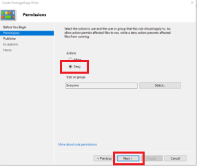
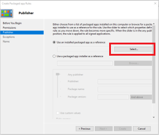
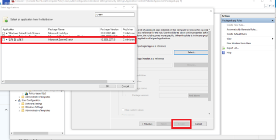
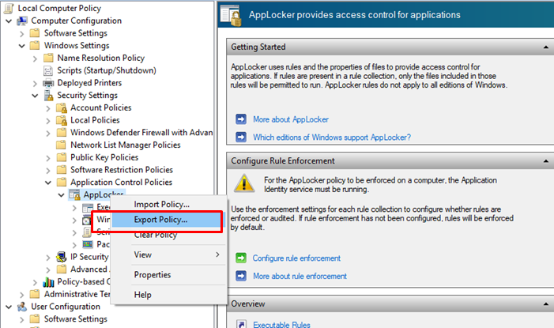
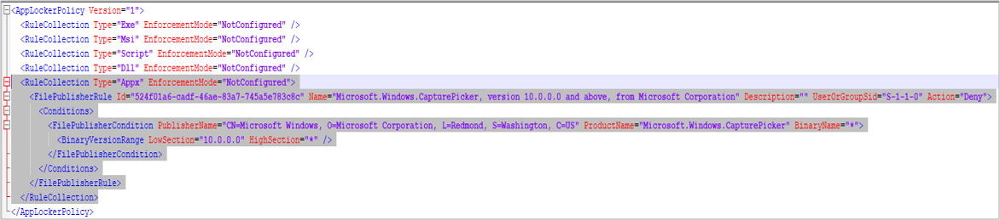

Knox Manage 21.01 release notes
Last updated July 26th, 2023
This Knox Manage 21.01 release scheduled to go live in January 2021, includes several improvements and enhancements to existing features and functionality.
KME console integration
Starting KM 21.01, the Knox Mobile Enrollment (KME) API is now integrated with the KM console. The following UI changes are now part of KM:
-
Samsung Account Single-sign on — KME Users need to log in with their Samsung account SSO credentials to use KME features from within the KM console.
-
KME features — The two key features of KME, namely Device and Profile management are now available in the KM console.
-
Device Enrollment menu — Existing KME and DEP menu items are now consolidated to form the Device Enrollment menu item.
-
KME profiles — KM users can now view, create, and delete KME profiles from the KM console. The KME profile creation process and UI in KM is simpler and more user-friendly.
Android Enterprise enhancements
Android device management now uses Android Enterprise instead of Android Legacy. Going forward, Knox Manage only supports new enrollments of Android 11 devices to the Android Enterprise mode. Android 10 devices previously enrolled in Android Legacy mode are still supported even when they’re upgraded to Android 11.
For devices running an OS earlier than Android 11, Knox Manage continues to support Android Legacy, with the scope limited to bug fixes.
Android 11 provisioning improvements
For devices running Android 11, KM now supports a new device provisioning method that lets the device user choose the device’s mode, depending upon whether the device is for Work use only or work and personal use.
KM still supports all the older provisioning methods that were available until the Android 10 release.
When the device was enrolled using KME or Zero-touch, the device user can choose the enrollment type.
Knox Support on Work Profile on company-owned device
Until KM 20.11, KM only supported Android Enterprise policies for device management. Going forward, for devices running a Work Profile on a company-owned device, KM now supports Knox policies.
Managed Google Play Web application
Starting this release, KM now supports web version of the Managed Google Play (MGP) app, using the Google Chrome browser. Note that before you allow the use of MGP’s web version, you must approve the use of Google’s Chrome browser. If Chrome isn’t on the list of allowed applications, you cannot add MGP web app.
To add a new MGP web app, do as follows:
-
Go to the Application page > click Add > click Select Application type > click Public App (Managed Google Play Private - Web). The Managed Google Play Web Apps page opens.

-
On this page, enter the following information:
- Title — Ideally, this title must match the app’s title on the MGP store.
- URL — This value is the web app’s Google Play Store URL.
- Display — Depending upon the app, you may choose to deploy it to run in either full screen, standalone, or minimal UI display.
-
Return to the Application page > select the newly added app > click Assign.
-
On the Assign Application page, provide all the relevant information and assign device targets to this application. When you assign a MGP web app, you must also assign the Google Chrome app at the same time.
Managed configuration user interface and usability improvements
The UI for Managed Configuration is now changed to use a custom method from Google’s iframe method for better flexibility and improved usability, for example using diverse Wildcards.
If you have already set up a managed configuration, you can choose to either use the previous configuration or use a new method. If there is no existing configuration, the new method is used for each new configuration.
System update freeze period
When applying system updates to devices running Android 9 and higher, IT admins can now use the Freeze Period option to delay deployment of system update to target devices. The following are important points to consider:
- Support for all update policies — The Freeze Period option supports all kinds of update policy such as automatic, postpone, and windowed.
- Freeze periods apply one at a time — Currently, IT admins cannot set up freeze periods that overlap each other. IT admins can set up multiple freeze periods but only one freeze period applies to devices at one time.
- Freeze period duration — IT admins can add a total freeze period of 90 days.
- Multiple freeze periods — Two freeze periods cannot overlap each other and must remain separated by a minimum of 60 days.
Restrict applications from unknown sources
For devices running Android 10 and higher, IT admins can now restrict the device user from installing applications from unknown sources. They can apply this restriction either on the entire device or just within the Work Profile. For devices running Android 9.0 or lower, this restriction applies to only the Work profile even if it is applied to the selected Device Wide option.
Advanced passcode security improvements
Going forward, IT admins can specify the use of strong authentication for the password policies on the device. Once the IT admin sets up the strong password policy, the policy is immediately deployed to target devices. The following are important points to consider:
- In addition to the regular authentication methods — such as passcode, PIN, or biometric recognition — IT admins can set up a strong password policy on the device. Strong authentication is restricted to PIN and Password.
- IT admins can require device users to log in again on a set time interval of up to 72 hours.
- For example, the device user can unlock their device using fingerprint recognition on a regular basis, but they must log in using strong authentication such as a PIN or a password every 72 hours.

Message Customization
For devices running Android 7 and higher, KM now supports message customization. Device users see error and support messages when they perform an action on their device that is blocked by the KM security policy. IT admins can now customize both short error codes as well as long support messages.
For devices running Android 9 and higher, IT admins can also show customized support messages when the Work profile is wiped by either the IT admin or by the device user.
Web-based Remote Support (beta release)
KM 21.01 includes a beta release of a web version of Remote Support. During the beta period, the existing standalone version of the Remote Support app is also available. The web version of Remote Support provides the same features as the standalone version, such as unattended mode and screen sharing.
For this beta release, recording and file browser features are unavailable. Only the screen capture feature is currently available in the web-based remote support app.
Currently, this feature is supported on Internet Explorer, Google Chrome, and Safari browsers.

Alert mail notification enhancement
KM now includes the ability to send emails to the IT admin when managed devices are unenrolled or disconnected from KM. This feature enables IT admins to manage their devices without needing to actively monitor them. To set up notification emails, go to History > Alert > Email Alert Setting.
iOS feature enhancements
This release of KM includes the following iOS improvements to iOS support:
-
DEP enrollment by User — IT admins can now select from the following options:
-
User Assignment Method — IT admins can use this option to assign device users to DEP device before KM enrollment.
-
User Authentication Method (New) — For this option, device users directly enter their user ID and password upon enrollment.
-
New Policy Support — App Clips — App clips are instant ways for device users to quickly access and experience apps without installing them on their devices. From KM 21.01, IT admins can choose whether to allow this policy on their managed devices.
-
App Block or Allowlist Policy — For devices running iOS 9.3+ and in Supervise mode, IT admins can now apply application block and allowlist policies to applications that were installed before enrolling the device in KM.
-
Device commands — For devices running iOS 9.3+, iOS device commands are a new feature and currently only work in Supervised mode for Power Off and Reboot functions.
Windows 10 app control by AppLocker
AppLocker is an in-built Windows 10 app that you can use to control a variety of executable file formats, such as exe, Windows Installers, Scripts, Packaged apps, and DLL. For more information, see The Microsoft AppLocker Guide.
Before device users can use AppLocker on their managed device, they need to do as follows:
-
Create XML rules using AppLocker wizard:
-
On your Windows 10 device, start Group Policy Editor.
-
Go to
Computer Configuration\Windows Settings\Security Settings\Application Control Policies\AppLocker, right-click and select Properties, then enable Rules which you need to control in your enterprise and select Enforce rules. Doing so turns on AppLocker rules. -
Click OK.
-
On the screen that opens, right-click and click Create Default Rules, and then follow onscreen instructions on the AppLocker wizard to configure your rules. For example, the following image shows how to create an XML rule to restrict the use of a screen capture tool.





-
Export the newly created XML rules to your local drive.

-
Go to the KM console > copy and paste the XML rules to your Knox Manage Profile, under the AppLocker menu.


-
Deploy the newly created profile to your managed Windows 10 devices.
Kiosk feature enhancements
This release includes the following enhancements for the Kiosk feature:
- Locktask allowlist feature for single/multi Kiosk — IT admins can now configure app packages for locktask allowlists in single as well as multi-kiosk devices. You can set a list of apps that can be run even if they are not included in the single/multi-app kiosk.
- Secure Browser Component — The multi-kiosk wizard includes a new component, namely Secure Browser. This component is only available for accounts with a Knox Suite license. To use the Secure Browser component, you must set up the Secure Browser policy as follows — Profile > Secure Browser > set the option to Use.
- Access to Airplane mode and Google Account settings — IT admins can now access airplane mode and Google account settings on kiosk devices.
KM agent update method improvements
This release rolls out support for a new Knox Manage update method with the following options:
- Manual
- User Consent (Notification and Update)
- Force Update (once a day)
IT admins can choose to use this new method of KM update instead of the existing version. Note that the old version of KM update is scheduled to be deprecated.
License registration usability enhancements
If the reseller ordered Knox Manage by entering Knox Customer ID at SLM, IT admin can get the licenses through KM from the Get license Key menu.
IT admins can now easily register the license that was provided to them by their Knox reseller. IT admins can choose to register their licenses manually or through automatic registration.
Items to note:
- Keys are available only for Knox Manage and Knox Suite.
- Only keys with with a valid end date are listed.
- Keys with a valid license status are available.
- New trial keys are also available.
Other enhancements
This KM release also includes the following additional enhancements:
-
When uploading or importing Apple APNs certificate, IT admins can now enter their Apple ID which is then shown in the APNs Setting.
-
If the default country code is set to South Korea, IT admins now need to provide a reason for downloading data.

Applicable menu items are — Audit Log, Device Log, Device Detail > Audit Log, Device Detail > Device Log, and Device Detail > Device Diagnosis.
-
The Device by Group report queries now include additional field options, such as Platform, Model Name, and Network Service Provider Name.
-
The header menu now includes the console error codes.
Resolved issues and improvements
- [KMVOC-10067 / 00207315]Wrong output for Organization Code and Name report
- [KMVOC-10066 / 00207144] Enrolling new device causes old device to be overwritten (HOTFIX)
- [KMVOC-10060 / 00207075][ETS] Reporting Error when running a device report (HOTFIX)
- [KMVOC-9994 / 00205922][SAMSUNG KNOX MANAGE MOBILE - CONTENT MISSING]
- [KMVOC-9989 / 00205630] Unable to upload single app launcher kiosk app
- [KMVOC-9988 / Internal] KM Portal Typo
- [KMVOC-9971 / 00205519]KM MFA login typo
- [KMVOC-9969 / 00205389] Fully Managed with Work Profile value since 20.11 (HOTFIX)
- [KMVOC-9964 / 00205423] When user try to modify the profile, the error is occurred. (HOTFIX)
- [KMVOC-9963 / 00205108]Change in Workprofile setting Knox Manage (HOTFIX)
- [KMVOC-9955 / 00205160] cannot access license info (HOTFIX)
- [KMVOC-9950 / 00203867] Sync errors (HOTFIX)
- [KMVOC-9949 / 00204981][ETS] Errors after Manage update (HOTFIX)
- [KMVOC-9931 / 00204499] Report discrepancy (HOTFIX)
- [KMVOC-9930 / 00204222] Cannot configure VPN (HOTFIX)
- [KMVOC-9883 / 00202636] APN is not being set as default (HOTFIX)
- [KMVOC-9873 / 00203301] Upload ‘Google Play Services’ APK fails
On this page
Is this page helpful?